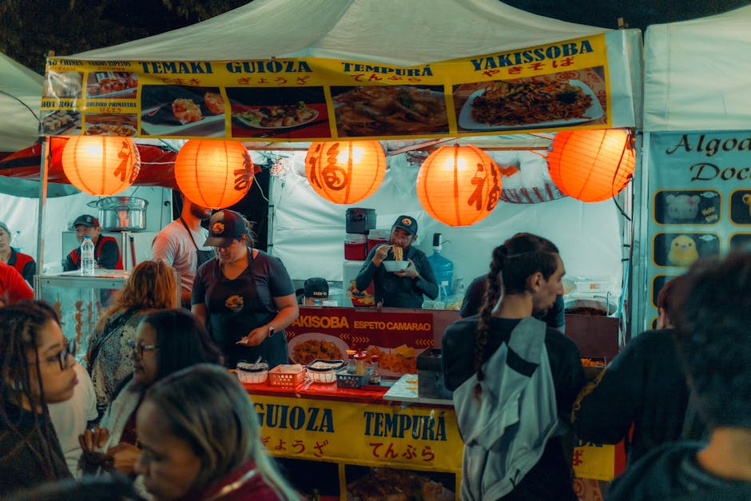
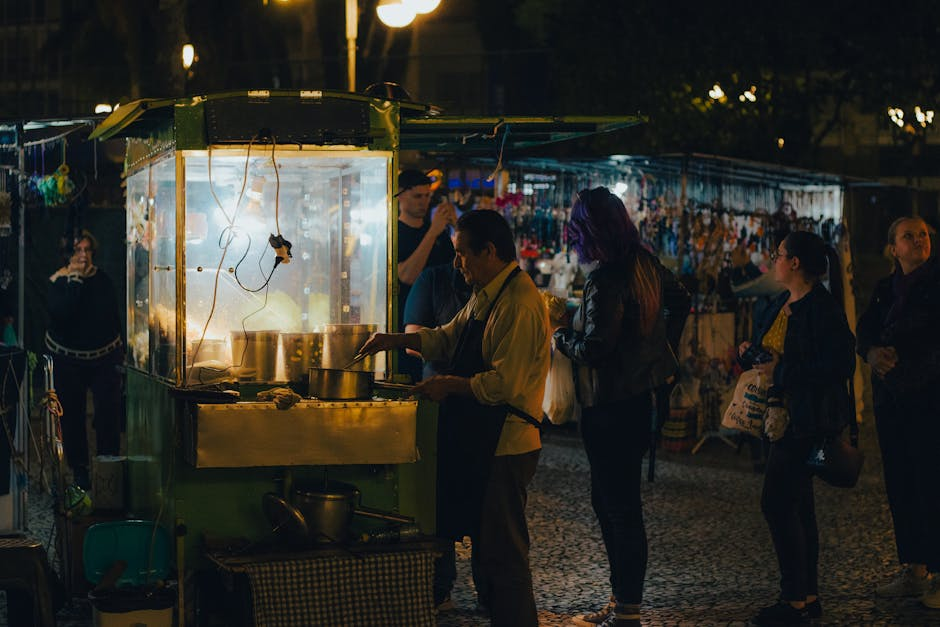
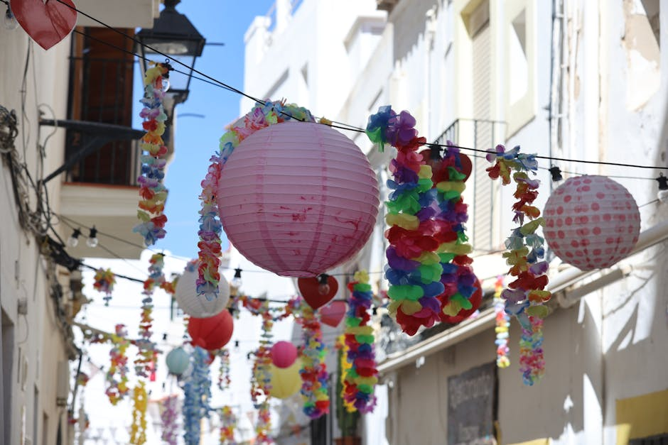

Scopri l'anima del territorio, un evento alla volta.
SpinoDeFlow ti guida attraverso le più autentiche tradizioni italiane. Trova le migliori sagre, esplora fiere locali e vivi le piazze al ritmo dei festival musicali.

Cosa troverai sul nostro portale
Una selezione curata per farti vivere le migliori esperienze culturali, gastronomiche e di intrattenimento locale.

Sagre Paesane
Immergiti nei sapori autentici della tradizione. Segnaliamo le migliori sagre paesane dove poter degustare prodotti tipici, vivere la convivialità e riscoprire le antiche ricette del nostro territorio.
Eventi Culturali e Fiere
Resta aggiornato su fiere locali e appuntamenti legati all'artigianato e alla storia. Dai mercatini storici agli eventi culturali che celebrano l'identità e le eccellenze artigiane di ogni regione.

Festival Musicali
Vivi le serate estive a ritmo di musica. Il nostro portale ti suggerisce concerti dal vivo, esibizioni di band locali e grandi festival musicali che animano le piazze durante i giorni di festa.
Cosa dicono di noi
Le esperienze di chi ha già scoperto il territorio grazie al nostro portale.
"Grazie a questo portale ho scoperto sagre paesane incredibili a pochi chilometri da casa. L'organizzazione delle informazioni è perfetta per pianificare il weekend."
— Marco T., 2026
"La mia guida di riferimento. Trovo sempre eventi culturali e concerti interessanti per tutta la famiglia senza dover cercare ore su internet."
— Giulia R., 2026
"Piattaforma essenziale per chi ama il cibo genuino e le fiere locali. Consigliatissimo per esplorare le tradizioni del nostro paese."
— Luca B., 2026
La nostra missione: valorizzare il territorio
SpinoDeFlow nasce con una missione chiara: connettere le persone con le tradizioni più vive e autentiche del nostro paese. Come portale eventi e sagre locali, raccogliamo e selezioniamo con cura le migliori iniziative, dalle piccole feste di paese ai grandi festival musicali che riempiono le nostre estati.
Crediamo fermamente che il modo migliore per conoscere un territorio sia attraverso i suoi sapori, la sua gente e la sua cultura. Il nostro obiettivo quotidiano è facilitare la scoperta di queste gemme nascoste, offrendo a famiglie e appassionati una panoramica completa, aggiornata e affidabile su concerti, fiere locali ed eventi enogastronomici imperdibili.

Domande Frequenti
Tutto ciò che devi sapere sul nostro portale eventi.
Che tipo di eventi trovo su SpinoDeFlow?
Il nostro portale eventi e sagre locali include una vasta selezione di appuntamenti in tutta Italia. Potrai trovare sagre paesane dedicate ai prodotti tipici, fiere locali, eventi culturali storici e festival musicali che animano le piazze.
Come posso partecipare alle sagre paesane promosse?
Noi forniamo le informazioni essenziali, come le date, i luoghi e i programmi di massima. L'ingresso, la partecipazione e l'organizzazione pratica delle sagre sono gestite direttamente dalle pro loco o dagli organizzatori locali sul posto.
Posso segnalare eventi culturali o concerti?
Certamente! Siamo sempre alla ricerca di nuove iniziative. Tramite il nostro modulo di contatto puoi suggerire fiere locali, sagre o festival musicali che ritieni interessanti e che vorresti vedere pubblicati per la nostra community.
Gli eventi elencati sono adatti alle famiglie?
Assolutamente sì. La stragrande maggioranza delle sagre paesane e delle fiere locali offre spazi ampi, atmosfere conviviali e spesso anche attività o giostre pensate appositamente per l'intrattenimento delle famiglie e dei bambini.
SpinoDeFlow vende i biglietti per i concerti?
No, noi agiamo esclusivamente come portale informativo e aggregatore. Per i festival musicali o gli eventi culturali che richiedono un biglietto d'ingresso a pagamento, ti rimandiamo sempre ai canali ufficiali e alle biglietterie degli organizzatori.
Mettiti in contatto
Hai un evento da segnalare o vuoi maggiori informazioni sul nostro portale? Compila il modulo e il nostro team ti risponderà il prima possibile.
Sede Operativa
Italia
Orari Supporto
Lunedì - Venerdì
09:00 - 18:00